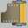
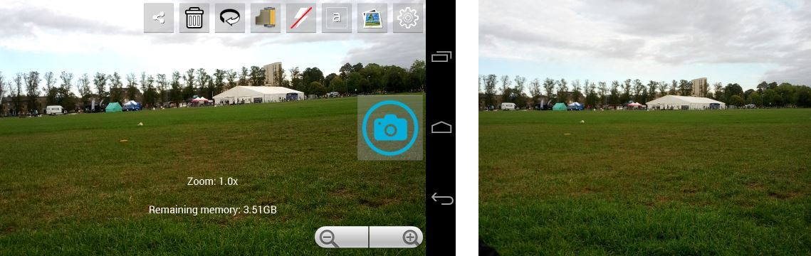

More of my Free software: Wifi Remote Play ~ Erebus RPG
Open Camera is an Open Source Camera app for Android phones and tablets. Features:
(Some features may not be available on all devices, as they may depend on hardware features, or the Android version.)
Open Camera is completely free, however if you wish you can show your appreciation and support future development by purchasing my donation app from Google Play (note, not available for Nokia X). You can also donate through Paypal (Paypal account not required, supports debit or credit card) or Bitcoin (Bitcoin address 1LKCFto9SQGqtcvqZxHkqDPqNjSnfMmsow). Thanks! Donations can be used for: purchasing hardware for porting/testing; app store fees; beer money :)
Open Camera Blog ~ Discussion Forums ~ Code Repository (Git)
This requires Android 4.0 or better. I've tested this successfully on the Samsung Galaxy Nexus and Asus Nexus 7 (2013), running Android 4.3. The auto-stabilise feature may not be available if the app deems there is not enough memory (RAM) available (technical explanation: requires 128MB of "large heap").
Note that I've had reports of problems on CyanogenMod (CM11) - unfortunately I don't have any CM11 devices to test on, and CyanogenMod doesn't appear to offer any means of testing without a real device (e.g., no emulator AVD images, no remote device testing), so I have no way of supporting this.
Simply point, and press the blue camera icon  to take a photo.
The camera will automatically focus before taking the picture. You can also focus at any time by touching on the screen. If
your device supports focus areas, you can touch the part of the screen you want to focus. Touching an area will also
(if your device supports it) control the exposure level (e.g., so clicking on a bright area will adjust the exposure
so that it becomes less bright). To zoom, use the slider next to the take photo button, or do a multi-touch "pinch"
gesture. You can also control via the volume keys on your phone or tablet - by default, pressing them will take a
photo, but can change this to zoom in/out from the Settings.
to take a photo.
The camera will automatically focus before taking the picture. You can also focus at any time by touching on the screen. If
your device supports focus areas, you can touch the part of the screen you want to focus. Touching an area will also
(if your device supports it) control the exposure level (e.g., so clicking on a bright area will adjust the exposure
so that it becomes less bright). To zoom, use the slider next to the take photo button, or do a multi-touch "pinch"
gesture. You can also control via the volume keys on your phone or tablet - by default, pressing them will take a
photo, but can change this to zoom in/out from the Settings.
You can press the gallery icon to view your photos
(by default saved in the OpenCamera folder) - it will show the most recent image or video. The gallery button's
icon will also show a thumbnail for the most recent image/video. Note that there is also an option
in the Settings to "Pause after taking photo" - if ticked,
then when you take a photo, the image will be displayed - to keep the photo, touch the screen (or take another photo). To delete it,
press the trash icon  . To share an image, press the share icon
. To share an image, press the share icon
 .
.
The screen display is kept on when Open Camera is running as the foreground app (if you want to switch off the display, do so on your device manually).
A white square is shown (depending on the focus mode), which turns green to indicate that the auto-focus was successful, or red if it was not.
 Switch camera - Switches between front and back camera (if your
device has two cameras).
Switch camera - Switches between front and back camera (if your
device has two cameras).
Switch to/from video - Switches between taking photo mode, and
recording video mode. When in video mode, the take photo icon will change to the record video icon
 .
.
Flash mode - Click this to cycle through the available flash modes. Popup text will explain what each mode is. (Only available if the camera supports flash.)
 Focus mode - Click this to cycle through the available focus modes.
Popup text will explain what each mode is. (Only available if the camera supports different focus modes.) A special mode is "Focus Manual",
which means the camera will never refocus when taking a photo, instead you should touch the screen to manually focus.
Focus mode - Click this to cycle through the available focus modes.
Popup text will explain what each mode is. (Only available if the camera supports different focus modes.) A special mode is "Focus Manual",
which means the camera will never refocus when taking a photo, instead you should touch the screen to manually focus.
Exposure compensation - Clicking this will bring up a slider and plus/minus buttons which can be used to control the exposure compensation. A higher value increases the exposure, so that pictures come out brighter in low light; a lower value makes pictures darker. Set to 0 for the default exposure. To get rid of the slider and buttons, either click the Exposure button again, or click elsewhere on the screen. See Exposure compensation. (Only available if the camera supports control of the exposure.)
 Exposure lock - Click to lock or unlock the exposure.
When locked, the icon will change to
Exposure lock - Click to lock or unlock the exposure.
When locked, the icon will change to  . Locking the exposure means
the exposure doesn't change based on the brightness of the current scene (though you can still adjust the exposure
compensation).
. Locking the exposure means
the exposure doesn't change based on the brightness of the current scene (though you can still adjust the exposure
compensation).
Gallery - Click to launch the Gallery app, to view the most recent photo/video (by default saved in the OpenCamera folder). If you get the message "No Gallery app available", then you should install a Gallery app (e.g., Gallery ICS). If you've changed the save location, you can "long press" on the Gallery icon, which will let you switch between the recent save locations.
 Settings - Click to open the Settings. (If your phone/tablet
has a hardware menu button, pressing that should also open the settings.)
Settings - Click to open the Settings. (If your phone/tablet
has a hardware menu button, pressing that should also open the settings.)
The on-screen display also shows the remaining battery left (green/red status bar in the corner), and optionally
the zoom level (if zoomed in), the remaining free storage space on the device, and the current angle orientation
of the camera. If "Store location data" is enabled (off by default), then a small "earth" icon
 will appear next to
the battery indicator when the location is available (you can still take photos when the earth icon doesn't show,
it's just that location data won't be stored in the photo). A dot shows to the top-right of the earth icon to
indicate the accuracy (green for accurate, yellow for less accurate). If the location isn't available, a red dash will be shown through the earth icon.
will appear next to
the battery indicator when the location is available (you can still take photos when the earth icon doesn't show,
it's just that location data won't be stored in the photo). A dot shows to the top-right of the earth icon to
indicate the accuracy (green for accurate, yellow for less accurate). If the location isn't available, a red dash will be shown through the earth icon.
All Android cameras will rotate the photo depending on the orientation of the camera, but only to the nearest 90 degrees - so the photos look right whether you hold the device in "portrait" or "landscape" mode. But Open Camera has the option to rotate the photos so they are perfectly level, so your shots come out looking perfectly level every time!

The above shows a rather exaggerated example - in practice, you can probably take better photos, but this feature ensures they come out perfectly level, without you having to edit them afterwards in a photo editor. Of course you won't always want this - perhaps you're going for artistic 45-degree shots - so this is an option. By default it is disabled. To enable, go to the Settings, and enable "Auto-stabilise". Note that this feature is memory intensive - it will not be available on devices with low memory. Even where it is available, the performance of taking photos will be slower, and there is a risk it may cause the app to fail on devices I haven't been able to test. If you do have problems, you'll have to disable the feature again.
Also note that the feature reduces the available space in the image - because rotating an image makes it no longer fit into a rectangular image, so we have to crop it. So it's still advisable to try to hold the camera reasonably level when using this feature.
Camera Effects:
Apply a color effect - Choose a color effect to apply. (Only available if the camera supports color effects.)
Apply a scene mode - Choose a scene mode to apply. (Only available if the camera supports scene modes.)
Set the white balance - Choose a method to control how the white balance is set. See here for an explanation of white balance. (Only available if the camera supports different white balance settings.)
Set the ISO - A higher ISO setting means the camera is more sensitive to light, though may also result in more noise. This mimics the film speed on traditional film cameras. Note that this setting may not be supported on all cameras. See here for more details on ISO.
Auto-stabilise - Enable the auto-stabilise features for photos (see above). (Only available if the device has enough memory.)
Lock photo/video orientation - Normally the orientation of the photo/video will be rotated by some multiple of 90 degree such that the orientation looks right - e.g. if your device is held in portrait, the resultant image/video will be in portrait. This option allows fixing the camera to either be in portrait or landscape. Note that if auto-stabilise is also enabled, it will have the effect of aligning photos to the nearest 90 degrees.
Face detection - If this is enabled, then the camera will automatically try to detect faces, and use them for the focus, metering (exposure) and white balance. Faces will be drawn as yellow squares when detected. Note that if this option is enabled, then you will not be able to touch to manually select the focus area, and the white balance option will have no effect (since the face recognition will be used to determine these).
Camera Controls:
Timer - Set a timer for taking photos or recording video.
Timer beep - Whether to beep when the timer is counting down, or for the burst mode delay (see below).
Burst mode - Take a repeated set of photos when the camera button is pressed.
Burst mode interval - Specify the delay (if any) between photos in burst mode. Note that if no delay is selected, the actual speed that the photos are taken at will depend on the performance of your device's camera. If a delay is selected, note that this does not include the time taken to auto-focus and take each photo.
More camera controls... - Select to access the following controls:
Pause after taking photo - If ticked, after taking a photo the display will pause, with options to share or delete the photo. To keep the photo and continue, touch the screen (or take another photo).
Shutter sound - Whether to play a sound after taking a photo. (Requires Android 4.2 or higher to disable.)
Volume keys - You can set what happens when the volume keys are pressed: either take photo/video, focus, zoom in/out, change the exposure compensation, switch auto-stabilise on/off, just change the device's volume as normal, or do nothing.
Save location - Select the folder to store the photos in. Click on a folder (or "Parent Folder") to navigate through the filesystem. Select "New Folder" to create a new folder in the currently displayed folder. Select "Use Folder" to choose the currently displayed folder. Note that on Android, there are some folders that cannot be written to - Open Camera will display a message if you try to use one of these folders. You can also use this option to save to an external SD card, though unfortunately the path varies depending on the device, so you'll have to look this up or find it out yourself - it's usually one of the folders inside /mnt/ (press "Parent Folder" until you're in "/", then select "mnt", then have a look inside one of the folders in there - note that confusingly it won't be "sdcard", but will be named something else, e.g., "extSdCard"). Also note that Google have blocked write access to external SD cards in Android 4.4. Once you have specified a new save location, you can long press on the Gallery icon to quickly switch between recent save locations.
Show camera when locked - If you have a lock screen on your device (e.g., PIN to unlock), Open Camera by default will show above the lock screen - i.e., if locked, you won't have to enter the PIN to use Open Camera. The device still needs to be unlocked in order to go to the Settings or Gallery. If you would prefer Open Camera to always be unavailable when your device is locked, you can disable this option.
Lock screen when recording video - if enabled, the GUI will be locked when recording video (i.e., the GUI won't respond to touch presses). You can use this to prevent accidental presses that might change settings or stop recording. To unlock the GUI, swipe the screen (in any direction). Note that this won't prevent the video being stopped if you press your device's Home, Recent Apps or Power button (it is not possible for apps to override the behaviour of these buttons).
Rotate preview - this option rotates the on-screen preview by 180 degrees. Most users won't ever need this, but this option can be useful if you are using Open Camera with equipment which inverts the image. Note that this doesn't rotate the resultant photos/videos - you'll still have to rotate those yourself afterwards - but this will correct the preview so that you can still see what you are shooting properly.
On screen GUI... - Select to access the following controls:
Preview size - By default, Open Camera matches the aspect ratio of the preview (the image that is displayed on the phone/tablet's display) with that of the photo resolution ("Match photo size (WYSIWYG)" mode). The advantage is that what you see in the preview will match what will be in the resultant photo ("What-You-See-Is-What-You-Get") - though this may mean you will have "black bars" on the display in order to do this. If instead you select "Maximise preview size", then the camera preview will be as large as possible, trying to fill the available space. However if the resolution of the photo is a different aspect ratio to that of your device, this will result in the preview being cropped. Note that when in video mode, the preview is always in WYSIWYG mode. Also note that even in WYSIWYG mode, on some devices and resolutions, it may not be possible to match the preview to the resultant photo/video exactly; in such cases, Open Camera will try to match as closely as possible.
UI placement - Whether to optimise the user interface for left-handed or right-handed use.
Show zoom - Whether to display the current zoom level of the camera (when zoomed in).
Show zoom -/+ controls - Whether to display -/+ buttons to control zoom.
Show zoom slider controls - Whether to display to a slider to control zoom.
Show free memory - Whether to display the remaining storage space of the device.
Show angle - Whether to display the orientation angle of the device's camera.
Show angle line - Whether to display a horizontal "level" line that visually indicates the orientation of the device.
Show compass direction - Whether to display the compass direction of the device's camera.
Show a grid - Whether to display one of a choice of grids on the camera preview (including 3x3 grid, which helps with applying the rule of thirds).
Show a crop guide - A crop guide is a rectangle displayed on-screen, which has the specified aspect ratio (if different to the photo/video aspect ratio). This is useful if you plan to crop the resultant photos or videos to a particular aspect ratio. For photos, the crop-guide requires "Preview size" to be set to WYSIWYG mode.
Show thumbnail animation - Whether to display the moving thumbnail animation when taking a photo.
Force maximum brightness - Whether to force the screen display to maximum brightness.
Photo and Video Settings:
Photo and video settings - Select to access the following controls:
Camera resolution - Select the resolution of photo images taken by the camera. Note that if auto-stabilise is enabled, images will in general come out as a slightly lower resolution (due to the rotation and cropping that's required).
Image quality - The image quality of saved JPEG images. Higher means better quality, but the image files will take up more storage space.
Store location data (Geotagging) - If selected, then photos will be tagged with the current location, and compass direction (note that if Open Camera is called via another app, the compass direction won't be saved - this is only supported when Open Camera is run as a standalone app). Location data will also be stored in videos (though only for devices that record in MPEG4 or 3GPP formats).
Video resolution - Select the resolution of videos taken by the camera.
Force 4K UHD video (experimental) - Enable recording in 4K UHD (3840x2160) on the back camera (if ticked, this overrides the setting in "Video resolution"). Note that 4K video isn't fully supported by the standard Android API yet, so there is no way for Open Camera to determine if your device supports 4K video. If you enable this on a device that doesn't support it, you may either get an error message when you try to record, or it may succeed but create a video where the resolution isn't 4K, or may even result in a crash! So please test this out first. I've tested this successfully on a Samsung Galaxy S5 and Note 3. (If this option doesn't show up at all, it's because Open Camera thinks this is a device that probably doesn't support 4K video - if your device does support 4K video, please let me know so I can fix this.) Also note that on some devices, 4K resolutions may show up in the list of available video resolutions anyway.
Enable video stabilization - Video stabilization reduces the shaking due to the motion of the camera in both the preview and in recorded videos.
Video bitrate (approx) - If set to a value other than "default", the default video bitrate is overridden. Higher values mean better quality video, but the files take up more disk space. Note that some values may be unsupported by your device, and may cause the recording to fail - in some cases, this can cause problems with the camera that require a reboot to fix. So please test before using. Also note that the bitrate setting is approximate - the resultant video file will typically be slightly different to that requested.
Video frame rate (approx) - If set to a value other than "default", the camera will try to match this frame rate. Note that this is very approximate, as frame rate depends on many factors such as your device and lighting conditions, so there is no guarantee that the resultant video's frame rate will match with the requested value. Also note that some frame rate values may be unsupported by your device, and cause the recording to fail, so please test before using.
Max duration of video - This option can be used to set a maximum duration of the video. If set, video recording will stop after the specified time (unless already stopped earlier).
Restart video after max duration - If a max duration has been set (see above), this option can be used to make the video automatically stop and restart the specified number of times. So this can be used to take a video for a long period, broken up into multiple video files. If a max duration has not been set, then this option has no effect.
Record audio - Whether to record audio when recording a video.
Audio source - Select the audio source for recording video. The effect of this depends on your device - if it supports an external microphone, you may be able to use this by selecting "External mic".
Flash while recording video - If enabled, the camera flash will flash every second while recording video. This isn't something most people will need, but it can be useful if the phone is being operated remotely, as a signal that the video is still recording.
Misc:
Online help - Load this web page.
Donate to support development - Loads the page for my donation app.
About - Provides various debug information about the app and your device's camera. You can also copy this information to the clipboard.
I don't like the UI! - I'm hoping to make improvements to the user-interface - I have some ideas to make more options quickly accessible. But please be specific - comments like this could mean all sorts of things, such as the style of the icons, the arrangement of the icons, wanting more things on the main screen, wanting less things on the main screen, preferring swipes to icons, wanting it easier to change certain options, or even that some devices may have a bug that I'm not aware of.
Why is the UI cluttered? - Under Settings/On screen GUI, there are options to disable various controls and so on from the main view.
How can I save to my external SD card - See Save location under Settings/More camera controls.
My device can do 4K/UHD, so why doesn't it work on Open Camera? - The Android API only allows up to FullHD. Devices which offer higher resolutions provide this only in the "stock" camera app (or "mods"). For some devices, it turns out that 3rd party camera apps can request recording in 3840x2160 (tested on Galaxy S5 and Note 3), but this isn't guaranteed to work, hence it's marked experimental. If this doesn't work, it's not a bug in Open Camera, it's something that's just not possible through 3rd party apps on some devices.
Why doesn't the FPS/bitrate setting for video work? - These settings only give "recommendations" to the camera, and there is no guarantee that they will be met. Some devices might not even allow recording at some settings, and there's no way to determine this in advance.
But my camera can do 60/120FPS, so why can't Open Camera? - High frame rates often are achieved only by the "stock" camera app (or "mods" of it) because these are written for a specific device and don't have to go through the standard Android camera API.
Why doesn't the preview display match the resultant photo/video? One of them is cropped. - Firstly, make sure that Settings/On screen GUI/Preview size is set to "Match photo size (WYSIWYG)". However if that doesn't fix the problem, this is a limitation on some devices and photo/video resolutions (it happens if the device doesn't offer a "preview" with the same aspect ratio as the chosen photo/video resolution). A workaround may be to try a different resolution for photos and/or videos.
Why isn't Open Camera available in my language? - I can only speak English I'm afraid. Please contact me if you're willing to do a translation (this doesn't require any knowledge of Android programming, it's just a case of translating a set of strings in a text file).
Why is the non-English translation of my language incomplete? - Scene modes and color effects aren't currently translated, as these are just strings returned by the camera. Also note that even if I get someone to translate Open Camera, when I later add new features/options, this may require additional strings which aren't translated. I don't have a team of paid translators, so it's not always possible to keep translations up to date :)
The non-English translation is wrong! - I can only speak English, and am dependent on other people to offer translations. If you think a particular translation is inaccurate, please let me know.
Why is the screen forced to maximum brightness? - If you don't like this feature, you can switch it off by going to Settings/On screen GUI/Force maximum brightness.
Why is auto-stabilise slow? - This feature requires doing a decompress of the JPEG data, followed by a rotation of a multi-megapixel image, then recompressing, which typically results in a short pause on most devices. And as devices get faster CPUs, they typically come with cameras with even bigger megapixels! This is why I've made it optional (and you can set the volume control to quickly switch it on and off if you like).
Why is auto-stabilise for photos only? - Doing auto-stabilise for video is a massively harder problem. This wouldn't be possible in real-time - rotating images causes a noticeable pause as it is, imagine having to do that for every frame. Also the rotation angle wouldn't be constant, so it's a much harder problem figuring out what the correct result should actually be.
Why does Open Camera have ads? - Open Camera does not have ads, but there are some clones that appear on Google Play with ads inserted. Please ensure that you've downloaded from one of the places listed above on this page.
Can I use the Open Camera source code in my app? - Open Camera is available under the GPL (see Licence), and can be used for free, including commercially, if you follow the terms of that licence (this means making the source of your app available under a GPL-compatible licence). If you would like to use the Open Camera in a closed source app, please contact me for a commercial licence, with details on your company and app.
Please contact me at mark dot harman at ntlworld dot com for bug reports, feature suggestions, etc. I can only test Open Camera on a small number of devices, so if you are having problems, these may be issues that I am unaware of, so reporting bugs will help me improve Open Camera!
If you experience a crash, and Google offers to "Report", please do so (if you've installed via F-Droid, please see here). If you are reporting a bug, it is also helpful to email me the "About" information - please go to Settings/About, then click "Copy to clipboard", then you can paste the information into an email (or Google Keep, or wherever) to send to me.
If something stops working in Open Camera (either it fails to start, or something no longer works properly), first try a reboot of your device. If that doesn't resolve the problem, another thing to try is reinstalling the app (or go to your device's Settings and select "Clear data" for Open Camera) to reset it to its initial conditions. Obviously ideally this shouldn't happen, but can be a way of working around any unresolved bugs or odd conditions that appear.
Open Camera is written by Mark Harman. Additional credits:
Open Camera is released under the GPL v3 or later. The source code is available from https://sourceforge.net/projects/opencamera/files/.
The following third party files are used in Open Camera:
Version 1.20 (Work in progress)
FIXED Crash (NumberFormatException in Parameters.getPreviewFpsRange()) on
startup for mb526.
FIXED Problems if settings window was opened while timer was active (timer is
now cancelled when going to settings).
Version 1.19 (2014/09/08)
FIXED Crashes on startup due to invalid parameters being set.
FIXED Location info was lost when switching camera or changing scene mode.
FIXED Focus rectangle was shown after switching from video to photo, and
wouldn't disappear until a focus occurred.
FIXED Accents for Spanish translation.
ADDED New option to display crop guides.
ADDED Option to rotate preview 180 degrees (useful if using Open Camera with
adapters that invert the image).
UPDATED Material Design icons and colours.
UPDATED Improved look of toasts to match Android 4.4 look.
UPDATED Removed some pointless toasts.
Version 1.18 (2014/08/28)
FIXED Problem on some devices (including Nexus 5) where torch didn't turn off
until going to flash off mode.
FIXED Problem on some devices (e.g., Galaxy S5) if in video mode, and focus
mode is not continuous, and user went to settings and back, then tried
to record - video would hang.
ADDED Spanish translation (thanks to Mario Sanoguera).
UPDATED If camera can't be opened, touching the screen now tries to reopen the
camera.
UPDATED Allow installation of app onto external storage.
Version 1.17 (2014/08/24)
FIXED Crash during auto-stabilise if unable to rotate bitmap (out of memory?)
now instead reports being unable to auto-stabilise.
FIXED Crash if failed to start camera preview.
FIXED Crash when changing flash mode, if camera was lost.
FIXED Problem where photos were being taken out of focus on some devices (bug
introduced in v1.16).
FIXED "Save location" option didn't work if folder didn't exist (this also
meant it didn't work when the app is first installed, unless a
photo/video was taken first) (bug introduced in v1.16 with the new file
chooser dialog).
ADDED New options for volume keys: focus, and switch auto-stabilise on/off.
UPDATED Allow changing flash mode while recording video (so torch can be
switched on and off).
UPDATED Zoom -/+ controls are now disabled by default, to reduce clutter (for
those upgrading, you can change this in Settings/On screen GUI).
UPDATED Use more subtle/natural colors for red/green/blue in UI; improve look
of take photo/video icon.
Version 1.16 (2014/08/17)
FIXED Device freeze when recording video on some Samsung devices (e.g.,
Galaxy S2, and some Galaxy S3 variants).
FIXED Fail to take photo if in manual focus mode, and picture was taken
whilst focusing.
FIXED Changing left/right handedness of UI didn't update until app
paused/resumed.
FIXED Problems with left-handed UI when going to settings and back, icons
would shift to incorrect positions.
FIXED When geotagging was enabled, this didn't take effect until the app was
paused and resumed (or restarted).
FIXED If zoomed in, then switch camera or app paused, the camera preview
would reset to being unzoomed on some devices (e.g., Nexus 7).
UPDATED Save folder location is now chosen via a GUI, rather than having to
type the path.
UPDATED If exposure is non-zero, the exposure is displayed on the photo/video
toast.
UPDATED Photo/video toast now displays scene mode if not auto.
UPDATED Video toast now displays if audio recording is disabled.
UPDATED Photo/video toast now displays for longer.
UPDATED Improved behaviour of left-handed UI, to make it more consistent with
the behaviour of the right-handed UI.
UPDATED Minor improvements to alignment of on-screen text.
UPDATED New icon for switching between photo and video mode.
UPDATED Virtual buttons now dimmed.
ADDED Support for video stabilization.
ADDED Option to disable showing the zoom slider control (Settings/
On screen GUI.../Show zoom slider control).
ADDED Russian translation (thanks to maksnogin).
Version 1.15 (2014/08/02)
FIXED Crash when exiting settings, if camera wasn't opened (bug introduced in
v1.14).
FIXED More crashes due to camera drivers that aren't following Android API
specs (Parameters.getFocusMode() should always be non-null, but isn't
on some devices!)
FIXED If video failed due to error (e.g., hitting device max filesize,
running out of space, of other errors), Open Camera now stops properly
rather than thinking the video is still recording. Last video error is
also stored in the about/debug window.
ADDED New option to lock orientation to portrait or landscape.
ADDED New option Flash while recording video.
UPDATED Touch to set focus/metering now works while recording video.
Version 1.14 (2014/07/22)
FIXED Crash when clicking to switch between photo/video modes if camera
couldn't be opened.
FIXED Problem with face detection not resuming after focusing on mtk6589.
FIXED Workaround for aspect ratio bug introduced in Android 4.4.3:
http://code.google.com/p/android/issues/detail?id=70830
Problem that this caused with aspect ratio with video recording.
FIXED Open Camera now available as a choice when camera icon pressed from
Gallery app (Open Camera now responds to
android.media.action.STILL_IMAGE_CAMERA).
FIXED Open Camera now available as a choice when camera icon pressed from
Cover Lock Screen (beta) app (Open Camera now responds to
android.media.action.STILL_IMAGE_CAMERA_SECURE).
FIXED All available video resolutions are now supported.
ADDED New "manual" focus mode - focusing happens when you touch the screen,
but it doesn't do automatic focusing when taking a photo.
ADDED Support for more hardware buttons: camera button to take photo/video;
focus button; zoom in/out buttons.
ADDED Long press on gallery icon now shows a popup of recent save folders (if
more than one is available), allowing you to quickly change between
them.
ADDED Location data now stored in videos too, if geotagging option is enabled
(only for MPEG4 and 3GPP video formats).
ADDED Option for volume keys to do nothing (not even changing the device
volume).
ADDED Option to lock screen when recording video (swipe to unlock).
ADDED Option to limit duration of recording video (automatically stops after
specified time); also option to restart video a specified number of
times.
UPDATED Significantly improved speed for opening and closing settings (now
launched as a Fragment rather than a separate Activity).
UPDATED Open Camera now remains active rather than being blocked by a "screen
lock" (face/PIN unlock still required to go to Gallery or Settings).
This behaviour can be switched off by going to Settings/More Camera
Controls/Show camera when locked.
UPDATED Broadcast Camera.ACTION_NEW_PICTURE and com.android.camera.NEW_PICTURE
intents for new photos, and Camera.ACTION_NEW_VIDEO for new videos.
UPDATED WYSIWYG mode is now the default setting for the preview size.
UPDATED Expanded number of devices which show the "Force 4K UHD video
(experimental)" option (remember, 4K isn't officially supported by
Android API and this option is experimental - if this option shows, it
doesn't necessarily mean it will work on your device).
UPDATED Video time is now shown with smaller font and off-centre, so as to not
obscure the view so much.
Version 1.13 (2014/05/24)
FIXED Crash when opening settings on devices that didn't support
auto-stabilise (bug introduced in v1.10).
FIXED Crash introduced in v1.10 to do with cancelling autofocus on some
devices.
ADDED Options for video bitrate and frame rate. Note that both of these are
approximate settings, and whether they can be achieved may depend on
your device, and other conditions such as lighting. Also note that
setting non-default values for bitrate of frame rate may cause video
recording to fail, if the values are not supported.
UPDATED About window now shows device manufacturer and model, to help with
debugging.
Version 1.12 (2014/05/19)
UPDATED Improve support for ISO setting (didn't show up on some devices, e.g.,
some Galaxy S5 variants).
Version 1.11 (2014/05/17)
ADDED New GUI icon to set exposure lock.
ADDED New option in settings to set ISO.
ADDED Displays photo and video resolution etc, when starting up, switching
between photo/video, and switching camera.
ADDED About window now displays all camera parameters.
UPDATED Don't display switch camera icon if device only has 1 camera.
UPDATED Always reset to continuous focus mode when starting camera in video
mode (fixes some problems on some devices).
Version 1.10 (2014/05/07)
FIXED Preview wouldn't restart after taking photo with continuous focus, on
Galaxy Nexus.
FIXED Problems with aspect ratio when not using WYSIWYG preview mode and
recording video.
FIXED Camcorder profile was always being initialised from the back camera,
even when recording video with the front camera.
ADDED New (experimental!) option to support 4K UHD (3840x2160) video
(Settings->Photo and video settings->Force 4K UHD video). Note that 4K
video isn't properly supported by Android API, so this option may show
even if it isn't supported on your device, and may not work or even
crash. I've successfully tested this on a Samsung Galaxy S5 and Note 3.
ADDED Option to not display the -/+ zoom control.
UPDATED All available video resolutions offered by the camera are now supported.
UPDATED Picture and video resolution preferences display aspect ratio and
megapixels of each resolution.
UPDATED Reorganised preferences into new On screen GUI page.
UPDATED Don't change camera settings whilst camera is autofocusing (may help
problems/crashes on some devices).
Version 1.9 (2014/03/22)
FIXED Crash on some devices when starting app or switching camera (bug
introduced in v1.8).
Version 1.8 (2014/03/18)
FIXED Crash on startup if Network or GPS location providers not available,
and geotagging was enabled.
FIXED Crash if specified save folder was an empty string.
FIXED Don't ever turn on flash during autofocus when app is launched.
FIXED Various other crashes.
ADDED Option to not force screen display to maximum brightness.
ADDED Option to display horizontal "level" line.
ADDED Support for hardware menu button (now opens settings).
ADDED Option to display a 4x2 grid (if you previously had a 3x3 "rule of
thirds" grid, you'll have to reenable it under the Settings).
ADDED Added privacy policy (for location permission/geotagging) to intro
window text (needed for Nokia Store).
ADDED Uses setRecordingHint, may improve performance of starting video
recording.
ADDED New About option in Settings, providing debug info.
UPDATED Don't re-autofocus before taking a photo, if camera recently
successfully focused due to user touching the screen.
UPDATED Display yellow or green dot next to earth icon to indicate location
accuracy.
UPDATED Display earth icon with red dash through it, if geotagging is enabled,
but the app doesn't have a location.
UPDATED Current zoom is now saved when app goes idle, or switching cameras.
UPDATED Offset zoom slider slightly so as to not interfere with Google Now
swipe.
UPDATED Allow greater range of characters (including unicode) for save location
(now allows any character other than those reserved by filesystem).
Version 1.7 (2014/01/29)
FIXED More fixes for aspect ratio - the preview display should now always
have a 1:1 aspect ratio (on some devices this may mean black bars are
shown, if there isn't a match between the camera's available preview
sizes, and the aspect ratio of the device's display).
FIXED Possible crash relating to creating thumbnails.
FIXED Autofocus on startup didn't always actually focus.
FIXED If camera doesn't support focus areas, but does support metering areas,
still set the metering area.
FIXED Was sometimes trying to set metering areas when metering areas not
supported by device.
FIXED If image is deleted after taking the photo, the thumbnail is now
properly updated to what is now the most recent photo or video.
ADDED New option to set preview aspect ratio to match the picture/video
aspect ratio (WYSIWIG).
UPDATED Save folder can now be an absolute path, allowing possibility to save
on external SD cards (though you need to know what the path is, which
typically varies depending on device; I am unable to test this, so
please let me know if it does or doesn't work).
UPDATED Zoom -/+ control now matches the zoom slider orientation.
UPDATED Hide some icons when taking video, as they don't do anything.
Version 1.6 (2014/01/20)
FIXED Crash when trying to access image or video resolutions in settings, if
camera didn't offer these settings.
FIXED Exposure compensation wasn't available on devices if min or max
exposure compensation level was equal to 0.
FIXED Aspect ratio problems with the preview on some devices (if you are
still having problems, please let me know what Android device you are
using).
FIXED Aspect ratio problems with the preview on all devices when switching
the camera.
FIXED Problem on smaller devices where on-screen text overlapped with take
photo button; the text is now aligned to above the button on all
devices.
ADDED Zoom can now be also controlled via on-screen slider (next to the
plus/minus zoom buttons).
ADDED Option for volume keys to control the exposure compensation.
ADDED Option to display compass direction of camera on-screen (defaults to
on, disable it in options if you don't like it).
ADDED Option to choose microphone for recording audio (support for external
microphones).
UPDATED Exposure compensation is now set via a new button in the on-screen GUI
(the black and white +/- symbol) instead of the settings. Clicking this
will bring up a slider and plus/minus buttons to adjust the exposure
compensation. To get rid of the slider and buttons, either click the
Exposure button again, or click elsewhere on the screen.
UPDATED Geotagging now stores image compass direction (GPSImgDirection,
GPSImgDirectionRef).
UPDATED Display degree symbol for displayed on-screen angles.
UPDATED Zoom control is now transparent.
UPDATED Filter applied to sensor for device angle.
Version 1.5 (2014/01/09)
FIXED Crash on Android 4.4 when launching for first time, or changing the
save folder (issue with creating the save folder, due to Android no
longer allowing ANDROID_MEDIA_MOUNTED to be broadcast).
FIXED Crash if failed to open camera after switching cameras, then user tried
to zoom.
FIXED Other potential crashes (NumberFormatException on "es209ra" on startup;
RuntimeException on Xperia Go when taking photo; RuntimeException on
"maxx_ax5" when taking photo with face detection).
Version 1.4 (2013/12/16)
FIXED Calculation for focus areas wasn't right for front facing cameras.
FIXED Exif data wasn't getting saved if auto-stabilise option was enabled
(this also meant that on some cameras/focus modes, the orientation
would have been incorrect).
FIXED "Toast" pop-up messages looked poor on Android 4.4.
FIXED Fixed potential crash if taking picture fails.
FIXED Touch to focus with continuous focus shouldn't show red box.
FIXED Crash with auto-stabilise for some angles larger than 90 degrees.
FIXED Crash when rotating device when viewing "Photo and video settings".
FIXED If device was rotated when app was idle, the UI sometimes showed with
the incorrect orientation.
ADDED Images now tagged with current location (optional, off by default). Note
that Open Camera now requires Location permission, for this feature.
ADDED Option for face detection.
ADDED Touch to select focus area also now sets the metering area (used to
determine exposure).
ADDED Now displays current time.
ADDED Option to display a 3x3 grid ("rule of thirds").
ADDED Now displays flashy thumbnail animation when taking a photo (you can
disable this in the options under "More camera controls..." if you
don't like this sort of thing!)
UPDATED Gallery button now displays thumbnail of last image/video taken.
UPDATED Clicking the Gallery button now goes to most recent image/video.
UPDATED Made it easier to see on-screen text when underlying photo preview is
bright, by drawing a background with the text.
Version 1.3 (2013/11/18)
FIXED Video files may not have shown up properly in other apps, or over USB,
until rebooting device.
FIXED Make sure filenames for images/videos are unique.
ADDED New burst mode option - take a repeated set of photos at once, or with
a delay.
ADDED Option for video resolution.
ADDED Display battery status on screen.
UPDATED Reorganised settings screen to remove clutter - less commonly used
options have been moved to sub-screens; "Record audio?" is moved to
"Photo and video settings..."
UPDATED Only show zoom level (if that option is set) when actually zoomed in.
Version 1.2 (2013/11/09)
FIXED Crash when launching gallery, if no Gallery app installed on device.
FIXED Selecting a focus area shouldn't switch to focus mode auto.
FIXED Focus area wasn't getting reset when it should (e.g., changing focus
mode or zooming).
FIXED Fixed potential crash on auto focus.
FIXED Hide GUI options while taking a photo (otherwise problems can be caused
by changing options, e.g., changing focus mode).
FIXED Message for failing to open camera was too wide for portrait view.
ADDED Option for exposure compensation.
ADDED Show whether auto focus was successful or not (via red/green rectangle)
even if focus area not selected.
UPDATED Pause after taking photo now defaults to false.
UPDATED Made "toasts" look nicer.
UPDATED Added simple instructions to the intro window shown on first time
start-up.
Version 1.1 (2013/10/27)
ADDED Touch to select focus area.
ADDED Optional beep on timer countdown.
ADDED Option on whether to display the current camera zoom level on screen.
Version 1.0 (2013/10/17)
First release.
{kind=link}
{kind=link}